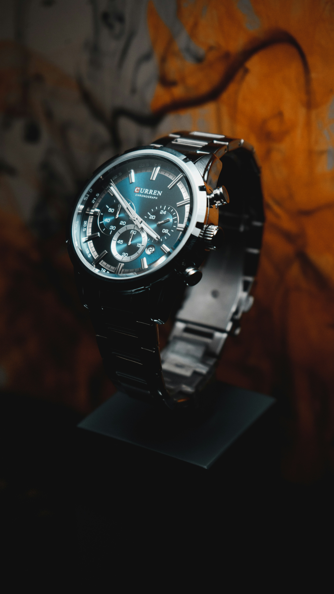
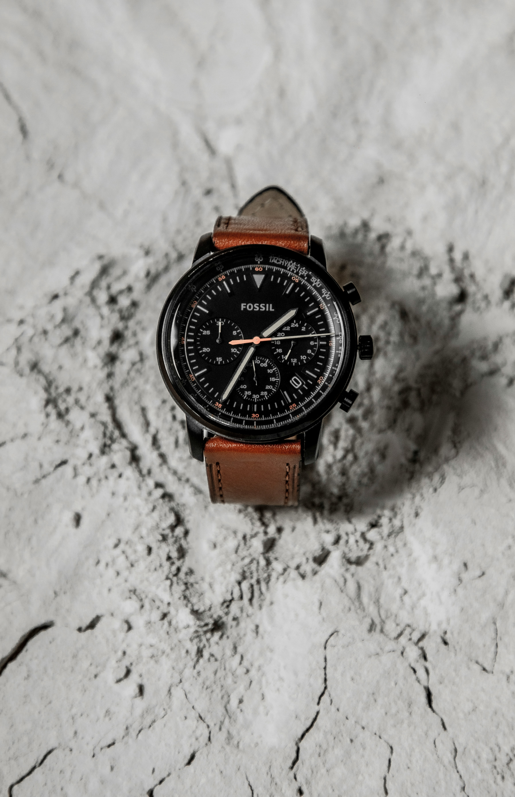
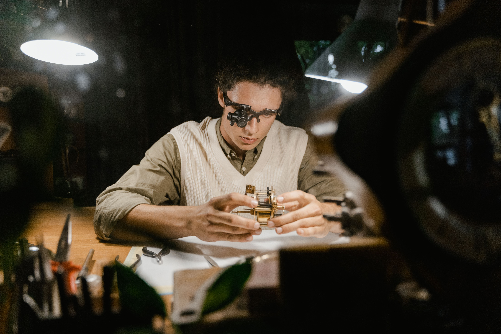

Handmontage
Jedes Uhrwerk wird von erfahrenen Uhrmachern Stück für Stück von Hand montiert.
AURELIUS & SÖHNE · SEIT 1888
Mechanische Uhren. Von Hand gefertigt. Für Generationen geschaffen.
Kollektion entdecken →Eine Frage der Zeit
Seit über 130 Jahren verbinden wir traditionelle Uhrmacherkunst mit einem kompromisslosen Anspruch an Qualität, Präzision und Ästhetik.
Jedes Werk entsteht in unserem Atelier in vielen einzelnen Arbeitsschritten – von der ersten Konstruktion bis zur abschließenden Regulierung.
Mehr über Aurelius & Söhne ↗Was einst als kleine Werkstatt begann, ist heute eine Manufaktur für außergewöhnliche mechanische Zeitmesser.

In einer kleinen Werkstatt legte Friedrich Aurelius den Grundstein für eine Manufaktur, deren Name bis heute für feinste mechanische Uhrmacherkunst steht.
Über Generationen wurde das Wissen weitergegeben, verfeinert und mit neuen technischen Möglichkeiten verbunden – ohne dabei das Wesentliche aus den Augen zu verlieren.

Jedes Uhrwerk wird von erfahrenen Uhrmachern Stück für Stück von Hand montiert.
Anglierte Kanten, polierte Flächen und fein dekorierte Werkteile machen jedes Kaliber einzigartig.
Präzise Regulierung und umfangreiche Kontrollen garantieren die Zuverlässigkeit unserer Zeitmesser.
Erst wenn jedes Detail unseren Ansprüchen genügt, verlässt eine Uhr unser Atelier.
Drei Linien, eine gemeinsame Philosophie: kompromisslose Qualität und zeitloses Design.



Eine Aurelius Uhr ist das Ergebnis aus Wissen, Geduld und unzähligen Stunden feinster Handarbeit.
Form, Proportion und Funktion werden zu einem Ganzen.
Präzise gefertigte Komponenten bilden das mechanische Herz.
Jedes Werk wird von Hand zusammengesetzt und geprüft.
Die abschließende Regulierung gibt der Uhr ihren Charakter.

Eine gute Uhr misst nicht nur die Zeit. Sie erzählt, wie wir sie verbringen.
Besuchen Sie unser Atelier und entdecken Sie unsere Kollektionen in persönlicher Atmosphäre.
Gerne nehmen wir uns Zeit für eine individuelle Beratung und zeigen Ihnen die Besonderheiten unserer mechanischen Zeitmesser.
Atelier Termin vereinbarenFür persönliche Beratung, einen Ateliertermin oder Fragen zu unseren Kollektionen erreichen Sie uns direkt.